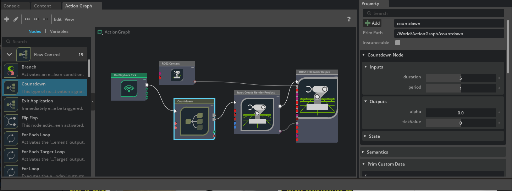

Multi-Tick Rendering#
Multi-tick rendering decouples each sensor’s render rate from the main simulation frame rate. Instead of rendering every sensor every frame, each sensor ticks independently at its own configurable rate. This significantly improves performance in scenes with many sensors by avoiding redundant rendering work.
Multi-tick rendering is enabled by default in Isaac Sim 6.0 and later.
Overview#
Before Isaac Sim-6.0, every camera and RTX sensor rendered at the simulation frame rate. With multi-tick rendering enabled, the renderer maintains independent tick counters for each sensor and only renders a sensor when its tick interval has elapsed.
The omni:sensor:tickRate attribute on each sensor prim controls the render frequency
in Hz. A value of 0 (the default) puts the sensor in autotrigger mode, where it
renders every frame, as if multi-tick rendering was disabled.
Performance Benefits#
Reduced GPU load: Sensors that do not need to update every frame skip rendering entirely, freeing GPU resources for other sensors or simulation work.
Independent rates: A stereoscopic depth camera running at 60 Hz no longer forces a 30 Hz RGB camera to also render at the same rate.
Better scaling: Scenes with many sensors (for example multi-robot fleets) see proportionally larger improvements because each sensor only consumes GPU time when it actually ticks.
Configuring Per-Sensor Tick Rates#
Sensor tick rates are controlled by the omni::sensor::tickRate attribute in the OmniSensorAPI
USD schema, which is applied to Camera and OmniLidar prims. The shipped USD assets in Isaac Sim 6.0
already have this schema applied with appropriate default tick rates.
Note
The OmniSensorAPI schema is also applied to OmniRadar prims, but in
Isaac Sim 6.0 GA the RTX Radar renderer ignores omni:sensor:tickRate
and always autotriggers. See RTX Radar autotriggers in 6.0 GA.
Using the Isaac Sim Extension API#
The isaacsim.sensors.experimental.rtx extension provides Python APIs for authoring sensor prims and configuring their tick rates.
For example, to author an OmniLidar prim at /World/Lidar with a tick rate of 10 Hz:
from isaacsim.sensors.experimental.rtx import Lidar
# Render the Lidar at 10 Hz independently of the simulation frame rate.
lidar = Lidar(path="/World/Lidar", tick_rate=10.0)
For cameras:
from isaacsim.sensors.experimental.rtx import RtxCamera
# Render the Camera at 30 Hz independently of the simulation frame rate.
camera = RtxCamera(path="/World/Camera", tick_rate=30.0)
Using OmniGraph#
When using the ROS2, UCX, or HSB helper OmniGraph nodes, the sensor tick rate is read
from the omni:sensor:tickRate attribute on the sensor prim. No additional node
configuration is needed.
For a worked ROS2 example that scales sensor and graph publish rates with simulation frame rate, see ROS2 Setting Publish Rates.
OmniLidar Tick Rate Must Equal scanRateBaseHz#
Warning
For OmniLidar prims, omni:sensor:tickRate must be set equal to
omni:sensor:Core:scanRateBaseHz for scan accumulation and multi-tick rendering to
behave correctly.
If the two values differ, the Lidar model falls back to producing partial scans every
frame instead of accumulating to a full rotation (rotary Lidars) or full azimuth sweep
(solid-state Lidars). Downstream pipelines that assume a full scan per tick - including
ROS2 RTX Lidar Helper laser_scan publishers, IsaacComputeRTXLidarFlatScan, and
any consumer of accumulated GenericModelOutput data - silently see truncated output.
The renderer does not log an error in this case.
For example, the shipped Example_Rotary Lidar config has scanRateBaseHz = 10, so
the sensor must tick at 10 Hz:
from isaacsim.sensors.experimental.rtx import Lidar
# Render at 10 Hz regardless of simulation frame rate.
lidar = Lidar.create("/World/Lidar", config="Example_Rotary", tick_rate=10.0)
The same constraint applies to Example_Solid_State and to vendor configs in
RTX Lidars. When wrapping an existing OmniLidar
prim, read omni:sensor:Core:scanRateBaseHz from the prim and pass that value as
tick_rate.
Architecture: Timeline, Physics, and the Renderer#
With multi-tick rendering enabled, three clocks advance independently per omni.kit.app update.
This section explains what each clock is, how each one advances,
and how they interact. Code that mixes omni.timeline time with physics or sensor time can
produce inconsistent timestamps in some configurations, so these relationships matter
when configuring deterministic simulations or interpreting sensor output.
The three clocks#
Clock |
Source of advance |
Controlled by |
Read by |
|---|---|---|---|
Run-loop / |
Wall-clock dt per app update, or a fixed manual dt when set |
|
Timeline UI, |
Physics simulation time |
Recomputed on every physics step as |
|
|
Renderer simulation time |
Mirror of physics time, written to the Fabric prim |
Driven by |
The multi-tick renderer’s per-sensor tick scheduler at |
The renderer no longer reads omni.timeline to obtain the current simulation time;
it reads the omni:time attribute on the /ExternalSimulationTime prim from Fabric. Physics writes that attribute on
every onPhysicsStep callback at stage-update order -10, so the latest value is
available to Hydra at order 30 within the same app update.
Per-frame ordering#
For one App.update() with the timeline playing:
The run loop computes
loop_dt(manual or wall-clock) andomni.timelineadvances byloop_dt.The physics stage-update phase runs
N >= 0substeps ofphysics_dtto catch the loop time. Each substep recomputes the physics simulation time and writes it to/ExternalSimulationTime.Hydra reads
/ExternalSimulationTimeonce. The per-sensor tick scheduler compares that value to each sensor’s last-rendered time and itsomni:sensor:tickRateto decide which sensors render this frame.OmniGraph nodes such as
IsaacReadSimulationTimeread the same simulation time, either directly or, when given a reference frameRationalTime, via interpolation from theTimeSampleStoragering buffer maintained byisaacsim.core.simulation_manager.
Behavior depends on the ratio of physics_dt to loop_dt#
Configuration |
Physics steps per app update |
End-of-frame |
Timeline vs physics time |
Per-sensor ticking |
|---|---|---|---|---|
|
1 |
Equal to loop time |
Equal each frame |
As scheduled |
|
|
Equal to loop time within one substep |
Equal each frame |
As scheduled |
|
|
Lags loop time by up to one |
Drifts within a physics step, resyncs when physics advances |
Only on frames where |
In the physics_dt <= loop_dt cases, multiple physics substeps in the same frame all
write to /ExternalSimulationTime, but only the last value is what the renderer
reads. TimeSampleStorage collapses these writes to a single sample per frame, keyed
by the frame’s RationalTime, holding the cumulative physics time.
In the physics_dt > loop_dt case, frames where no physics step runs leave
/ExternalSimulationTime unchanged. The render pipeline still runs every app update,
but per-sensor tick counters do not advance and no sensor produces a new output on those
frames. When physics finally steps, the prim jumps forward by physics_dt and due
sensors render on that frame.
When useFixedTimeStepping=true (the full Isaac Sim GUI default)#
The table above describes the substep-to-catch-up behavior that applies when
/app/player/useFixedTimeStepping is false (the default in standalone Python).
The full Isaac Sim GUI app sets this carb setting to true in
source/apps/isaacsim.exp.full.kit. With it true, the timeline ignores the run-loop’s
measured dt and forces dt = 1 / timeCodesPerSecond per accepted update inside
Timeline::update(). Sensor and timeline time then advance at:
sim_advance_per_wall_sec = (1 / timeCodesPerSecond) * loop_hz_wall
Consequences:
If
loop_hz_wall == timeCodesPerSecond(the default 60 Hz on both),sim/wall = 1.0and the system runs in real time. This is whatisaacsim.core.rendering_manager.RenderingManager.set_dt()configures when called alone - it alignsrateLimitFrequency,targetFramerate, andtimeCodesPerSecondto the same value.If
loop_hz_wall < timeCodesPerSecond(e.g. the loop is rate-limited below the timeline’s per-tick rate), the simulation runs in slow motion at ratioloop_hz_wall / timeCodesPerSecond. RTX sensors gated by/ExternalSimulationTimepublish proportionally slower; OnPlaybackTick-driven publishers (/clock, OmniGraph ticks) still fire atloop_hz_wall. This is the trap when users only set/app/runLoops/main/rateLimitFrequencywithout updatingtimeCodesPerSecond: physics step time and wall clock decouple in a non-obvious way.If
loop_hz_wall > timeCodesPerSecond, the behavior depends on/app/player/useFastMode(also exposed astimeline.set_play_every_frame(...)):``useFastMode = false`` (the default): the timeline subsamples (advances time on every Nth run-loop tick where
N = ceil(targetFramerate / timeCodesPerSecond)) so the timeline stays at its configured rate while the run loop ticks faster. This is used to drive higher render-product / OnPlaybackTick rates without speeding up sim time.``useFastMode = true`` (set when, for example,
timeline.set_play_every_frame(True)is called - some Replicator examples and benchmarks do this): the subsample gate is bypassed. Every run-loop tick advances the timeline by1 / timeCodesPerSecond, so sim time runs faster than wall time (fast-forward) at ratioloop_hz_wall / timeCodesPerSecond. This is the intended behavior for offline data generation where you want to ingest as much simulated time as possible per wall second, but it breaks any code that assumes sim time tracks wall time.
The reference example in
Setting the Simulation Rate (Advanced) uses
isaacsim.core.simulation_manager.SimulationManager.setup_simulation() plus
isaacsim.core.rendering_manager.RenderingManager.set_dt() to keep all three
clocks coherent - avoiding all of the above modes by construction. It leaves
useFastMode at its default of false.
Practical implications#
Always read simulation time through
SimulationManager.get_simulation_time(),IsaacReadSimulationTime, or the per-framegetSimulationTimeAtTime(rtime)lookup. These return the physics-driven value that the renderer also sees, so sensor stamps, TF stamps, and downstream consumers stay consistent.Do not use
omni.timelinecurrent time as a sensor or message timestamp. In thephysics_dt > loop_dtconfiguration the two clocks drift each frame and only resync on physics steps, producing inconsistent stamps.To keep physics, the renderer, and downstream pipelines all advancing once per frame, set
physics_dt == loop_dtviaSimulationManager.setup_simulation(dt=1.0 / hz)andRenderingManager.set_dt(1.0 / hz). Theisaacsim.exp.base.zero_delay.kitexperience configures this and is the reference setup for deterministic single-frame TF / image pairing.
Settings Reference#
The settings, APIs, and USD attributes below configure multi-tick rendering, per-sensor tick rates, and the underlying loop / physics clocks discussed in Architecture: Timeline, Physics, and the Renderer.
Setting / API / Attribute |
Kind |
Default |
Effect |
|---|---|---|---|
|
carb setting |
|
Enables multi-tick rendering. When |
|
carb setting |
|
Builds a per-sensor Top-Level Acceleration Structure (TLAS) on each sensor tick instead of once per frame. |
|
carb setting |
|
When |
|
Python API |
n/a |
Sets |
|
Python API |
1/60 s |
Sets |
|
Python API |
n/a |
Render the stage without stepping physics. Temporarily sets |
|
USD attribute |
|
Per-sensor render rate. Compared against |
|
USD attribute |
Config-dependent (for example |
OmniLidar scan rate. Must equal |
|
USD attribute |
|
OmniLidar scan accumulation. When |
The /rtx/hydra/supportMultiTickRate and /rtx/rendering/perSensorTickTlas settings
are configured in isaacsim.exp.base.kit and are also passed as standard test
arguments to all extension tests.
Note
To reproduce the Isaac Sim 5.x render-every-frame behavior in 6.0 (for
example to debug a regression), launch with
--/rtx/hydra/supportMultiTickRate=false. Most other code paths in 6.0 assume the
global default and have not been validated with the setting disabled.
Migration from Previous Releases#
If you are upgrading from a release where multi-tick rendering was not enabled by default, the following changes may affect your workflow.
General changes#
Update Camera and OmniSensor prims to work with multi-tick rendering. Apply the
OmniSensorAPIschema toCameraprims. This schema is already applied by default toOmniLidar/OmniRadarprims. Set theomni:sensor:tickRateattribute to control render frequency. Multi-tick rendering is transparent when sensors use the defaultomni:sensor:tickRateof0(autotrigger), which renders every frame.USD assets updated. Shipped sensor assets now have the
OmniSensorAPIschema applied. If you have custom USD assets withCameraorOmniLidar/OmniRadarprims, apply theOmniSensorAPIschema and setomni:sensor:tickRateto control render frequency.frameSkipCount is deprecated. Replace usage of
frameSkipCounton ROS2/UCX/HSB helper nodes withomni:sensor:tickRateon the sensor prim. See frameSkipCount Deprecation below.RTX Lidar accumulation moved to a USD attribute. Lidar scan accumulation is now controlled by the
omni:sensor:Core:accumulateOutputsattribute on theOmniLidarprim. The deprecatedisaacsim.sensors.rtxextension’sIsaacExtractRTXSensorPointCloudNoAccumulatorannotator and itsIsaacCreateRTXLidarScanBufferandIsaacComputeRTXLidarFlatScannodes have been updated to read this attribute. The newerIsaacExtractRTXSensorPointCloudannotator and OmniGraph node live inisaacsim.sensors.rtx.nodesand assume the GMO buffer already contains either a full scan or a per-frame partial scan based onaccumulateOutputs.Replace single-render-product waits with full app updates. The
omni.syntheticdata.sensors.next_render_simulation_asynchelper (and any other helper that targets a single render product) does not advance per-sensor tick counters correctly under multi-tick rendering. Useisaacsim.core.experimental.utils.app.update_app_asyncinstead, which performs full application update steps and ensures all sensor ticks are processed.Before:
import omni.syntheticdata # Example values for an attached render product and a per-product wait count. render_product_path = "/Render/RenderProduct_Replicator" N = 1 # Deprecated: does not advance per-sensor tick counters under multi-tick rendering. await omni.syntheticdata.sensors.next_render_simulation_async([render_product_path], N)
After:
import isaacsim.core.experimental.utils.app as app_utils # Number of full application update steps to perform. N = 1 await app_utils.update_app_async(steps=N)
frameSkipCount Deprecation#
In previous releases, publish rates for the ROS2 and UCX helper nodes were controlled by
the frameSkipCount input on each helper node. This parameter is now deprecated.
With multi-tick rendering enabled globally, the correct way to control how often a
sensor publishes data is to set omni:sensor:tickRate on the sensor prim itself. This
is more efficient because the sensor does not render at all during skipped ticks, rather
than rendering and discarding the output.
The frameSkipCount parameter still works for backward compatibility, but a
deprecation warning is logged when a non-zero value is used. It will be removed in a
future release.
The deprecation applies to every helper node that previously exposed frameSkipCount:
ROS2 Camera Helper(isaacsim.ros2.bridge.ROS2CameraHelper)ROS2 Camera Info Helper(isaacsim.ros2.bridge.ROS2CameraInfoHelper)ROS2 RTX Lidar Helper(isaacsim.ros2.bridge.ROS2RtxLidarHelper)UCX Camera Helper(isaacsim.ucx.bridge.UCXCameraHelper)
The newer ROS2 RTX Radar Helper (isaacsim.ros2.bridge.ROS2RtxRadarHelper) was
introduced after this deprecation and does not expose frameSkipCount at all.
Multi-tick scheduling migration#
The table below lists 5.x rate-control inputs and the recommended 6.0 replacement for
each sensor type. For the broader extension API migration (Kit-command-based sensor
creation, class renames, annotator attach styles, GMO-helper changes), see
RTX Sensors. For the deprecated isaacsim.sensors.camera
extension, see Camera Sensors. For auxOutputType ->
GenericModelOutput channels, see Auxiliary Output Level and the GenericModelOutput RenderVar.
Sensor type |
5.x input |
6.0 replacement |
Notes |
|---|---|---|---|
RTX Lidar |
|
|
Must equal |
RTX Lidar |
|
|
Helper input is now ignored and logs a deprecation warning when set to |
Camera (ROS 2) |
|
|
Camera prim must have |
Camera (UCX) |
|
|
Helper still accepts |
RTX Radar is intentionally omitted: omni:sensor:tickRate is ignored on
OmniRadar in 6.0 GA (see
RTX Radar autotriggers in 6.0 GA). Gate Radar publish
rates downstream instead.
Known Issues#
RTX Radar autotriggers in 6.0 GA#
In Isaac Sim 6.0 GA, the RTX Radar renderer ignores omni:sensor:tickRate
on OmniRadar prims and renders every simulation frame. Setting tick_rate on
isaacsim.sensors.experimental.rtx.Radar has no effect on the actual
render cadence; the attribute is still authored on the prim, but the multi-tick
scheduler skips Radar prims. This is expected to be corrected in a future release.
The autotrigger limitation does not affect OmniLidar or Camera prims.
OmniLidar partial-scan fallback#
If omni:sensor:tickRate is not equal to omni:sensor:Core:scanRateBaseHz on an
OmniLidar prim, the sensor falls back to emitting partial scans every frame. See
OmniLidar Tick Rate Must Equal scanRateBaseHz for details and
the recommended remediation.
Radar + Lidar frames-in-flight race#
A fatal crash from rtx.sensors.lidar.core.plugin may occur during the first 1-2
wall-clock seconds after starting simulation when a scene combines RTX Radar, RTX Lidar,
and Motion BVH. The crash is caused by a timing-dependent race in the RTX sensor
framework’s frames-in-flight (FIF) scheduling, where the Lidar’s per-frame trace begins
before its sensor profile has been initialized. Affected configurations crash
deterministically; unaffected hardware does not see the issue. The error appears as a
floating-point exception inside LidarRotary::openTrace or, less commonly, a
segmentation fault in the v3.0 sensor scheduler:
[Fatal] [carb.crashreporter-breakpad.plugin] Crashing: SIGFPE at rtx.sensors.lidar.core.plugin::LidarRotary::openTrace
Once the simulation has been running for ~1-2 wall-clock seconds without crashing, the session is stable for the remainder of its lifetime.
Standalone Python workaround#
In standalone Python workflows, delay creating the render product for the Radar and
attaching any Annotators or Writers until after the frames-in-flight have stabilized.
Construct the Lidars normally before timeline.play(), but construct only the
Radar’s USD authoring object pre-play and defer the RadarSensor wrap until after a
short warmup window:
from isaacsim import SimulationApp
simulation_app = SimulationApp({"headless": True, "enable_motion_bvh": True})
import carb
import numpy as np
import omni
from isaacsim.core.experimental.objects import Cube
from isaacsim.sensors.experimental.rtx import (
Lidar,
LidarSensor,
Radar,
RadarSensor,
parse_generic_model_output_data,
)
Cube("/cube", sizes=2.0, positions=np.array([10.0, 0.0, 0.0]))
# Lidars: full wrap pre-play (USD prim + render product + annotators).
lidar_sensor_1 = LidarSensor(Lidar("/lidar_1"), annotators=["generic-model-output"])
lidar_sensor_2 = LidarSensor(Lidar("/lidar_2"), annotators=["generic-model-output"])
# Radar: USD authoring object only. Defer the RadarSensor wrap until after the
# Lidar frames-in-flight slots have stabilized post-play.
radar = Radar("/radar")
# Start playback and let the Lidars warm up for a few frames before wrapping
# the Radar. 5 frames is one full rotation of the default 3-slot
# frames-in-flight buffer plus a small margin; heavier scenes may need more.
timeline = omni.timeline.get_timeline_interface()
timeline.play()
for _ in range(5):
simulation_app.update()
# Now safe to wrap the Radar. This call creates the Radar's render product and
# binds annotators - the operation that would open the FIF race window if done
# concurrently with Lidar attachment.
radar_sensor = RadarSensor(radar, annotators=["generic-model-output"])
# Continue running and verify every sensor is producing output.
for _ in range(60):
simulation_app.update()
for sensor, name in [
(lidar_sensor_1, "lidar_1"),
(lidar_sensor_2, "lidar_2"),
(radar_sensor, "radar"),
]:
data, _ = sensor.get_data("generic-model-output")
gmo = parse_generic_model_output_data(data)
carb.log_warn(f"{name}: numElements={gmo.numElements}")
timeline.stop()
simulation_app.close()
The 5-frame warmup is conservative: it is one full rotation of the default 3-slot frames-in-flight buffer plus a small margin. Heavier scenes may require a larger value.
OmniGraph workaround#
In OmniGraph workflows using the ROS2RtxRadarHelper node, you can stagger creating
the Radar’s render product until after the Lidars have stabilized. Place an
omni.graph.action.Countdown node between the OnPlaybackTick and the
ROS2RtxRadarHelper node, setting its duration to 5 and its period to
1. The Countdown node’s finished output triggers downstream graph execution
after duration ticks have elapsed, analogous to the 5-frame warmup in the standalone
Python workflow. You may need to increase the duration value based on your scene’s
complexity and your hardware configuration.
{kind=link}
